Lesson 29: Historical Alarms + Lab 16 – Building a Historical Alarm Display
Source: AVEVA InTouch for System Platform 2023 Training Manual, Module 5 – Alarms and Events Visualization, Lab 16 (pages 369–380)
This lesson completes Lab 16 — configuring the Alarm Client to retrieve and display historical alarm data from History Blocks, adding mode-switching buttons, creating runtime filters, and verifying the combined alarm and event view.
29.1 Configuring the Alarm Client for History Blocks
Reference: Module 5, Lab 16 (pages 369–370)
Continuing from the previous lesson where you created the AlarmHistDisplay symbol and placed the Alarm Client on the canvas, you will now configure it to retrieve historical data from History Blocks.
In Alarm Mode, set Client Mode to Historical Alarms.
In Database Connectivity, verify Authentication Mode is Windows Integrated, then enter your Historian server name in the Server Name field.
In the Database Name dropdown, select History Blocks.
Warning: When you switch from a SQL database (like WWAlmDb) to History Blocks, a Configuration Warning appears telling you the current configuration — including any saved passwords — will be lost. In a production environment, record your authentication details before proceeding. In this lab, no previous configuration exists.
In the Configuration Warning dialog, click Yes to continue.
Click Test Connection. An Info message confirms the connection succeeded.
Click OK to close the message.
In the Other Settings dialog, set Time Range to 15 minutes from the dropdown list.
Ensure Update to Current Time is checked.
Click OK to close Edit Animations.
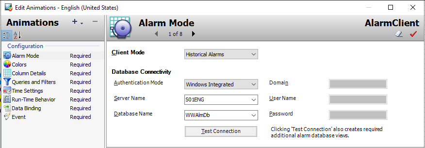
Configuring the Alarm Client for Historical Alarms with database connectivity to the Historian server (page 369)
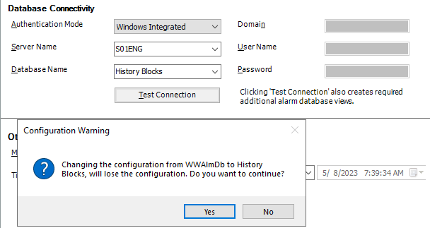
The Configuration Warning dialog — be aware this will clear any existing SQL database configuration (page 369)
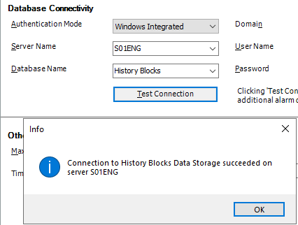
Successful connection test to History Blocks on the Historian server (page 370)
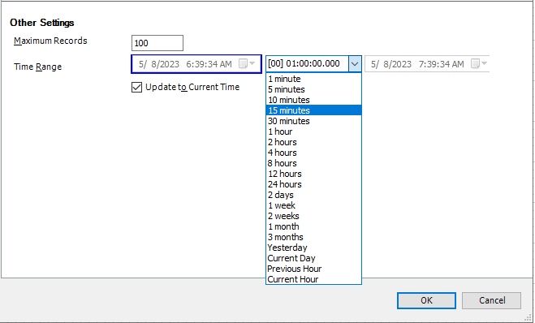
Setting the time range to 15 minutes and enabling auto-update to current time (page 370)
29.2 Adding Mode-Switching Buttons
Reference: Module 5, Lab 16 (pages 371–374)
To let operators switch between historical modes at runtime, you will create three buttons — Historical Alarms, Historical Events, and Historical Alarms & Events — each with Pushbutton and Element Style animations.
Create the Historical Alarms Button
Add a Text element at the top-left of the canvas: "History Alarm Mode:". Set Name to AlarmMode_Txt, ElementStyle to Title.
Add a Button to the right of the text. Set Name to HistAlarm_Btn, ElementStyle to Intensity2, Text to "Historical Alarms".
Resize the button to fit the text.
Double-click HistAlarm_Btn and add two animations:
Key Concept: The Pushbutton animation sets the ClientMode to 3 (Historical Alarms) when clicked. The Element Style animation highlights the button with Intensity4 when ClientMode equals 3, providing visual feedback about which mode is active.
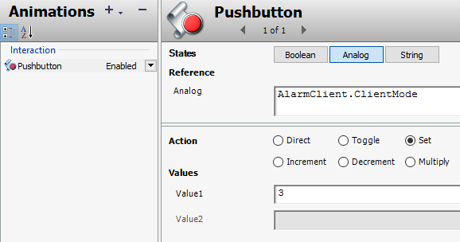
Pushbutton animation — clicking this button sets AlarmClient.ClientMode to 3 (Historical Alarms) (page 372)
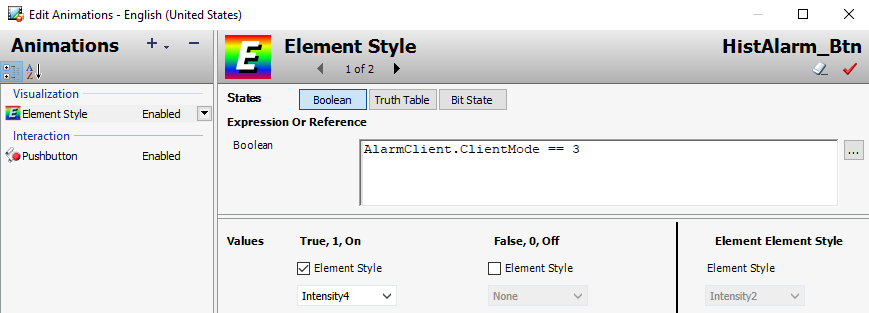
Element Style animation — the button highlights with Intensity4 when the client is in Historical Alarms mode (page 372)
Create the Historical Events and Combined Buttons
Duplicate HistAlarm_Btn. Name the duplicate HistEvent_Btn, Text: "Historical Events".
Modify the animations: Pushbutton Value1 = 4, Element Style expression: AlarmClient.ClientMode == 4.
Duplicate HistEvent_Btn. Name it HistAE_Btn, Text: "Historical Alarms & Events".
Modify the animations: Pushbutton Value1 = 5, Element Style expression: AlarmClient.ClientMode == 5.
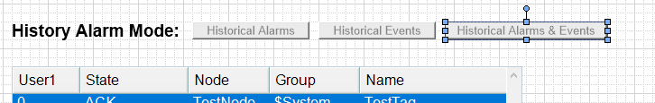
The three mode-switching buttons displayed above the Alarm Client (page 374)
Align and Expand
Select the text and all three buttons, then use the alignment toolbar to click Align Middle and Make Horizontal Spacing Equal.
Expand the AlarmClient to the right to fill the available width.
Save and close, then check in the graphic.
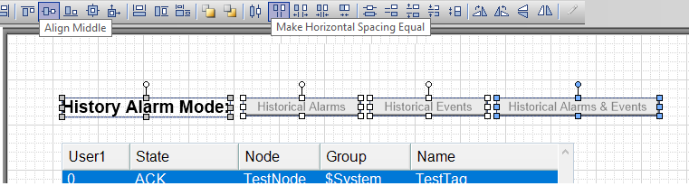
The aligned buttons and expanded Alarm Client showing the complete historical display layout (page 375)
29.3 Adding a Navigation Button
Reference: Module 5, Lab 16 (pages 375–376)
You will now add a "Historical Alarms" button to the SystemNavigation graphic so operators can open the historical display from the main navigation bar.
Open SystemNavigation for editing.
Duplicate the Alarm Overview button and place the duplicate to the right.
Use Substitute Strings to change the text to "Historical Alarms".
Right-click the new button and set Custom Properties: GraphicName = AlarmHistDisplay, WindowModal = false.
Save and close, then check in the graphic.
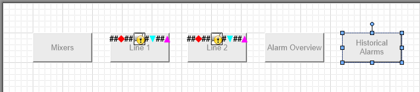
The navigation bar with the new Historical Alarms button added alongside the existing buttons (page 375)
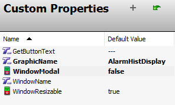
Custom Properties for the Historical Alarms navigation button (page 376)
29.4 Testing at Runtime
Reference: Module 5, Lab 16 (pages 376–380)
Click Runtime.
In the Navigation window, click the Historical Alarms button.
After a moment, the AlarmHistDisplay window opens with the Historical Alarms button highlighted, and historical alarms appear in the grid.
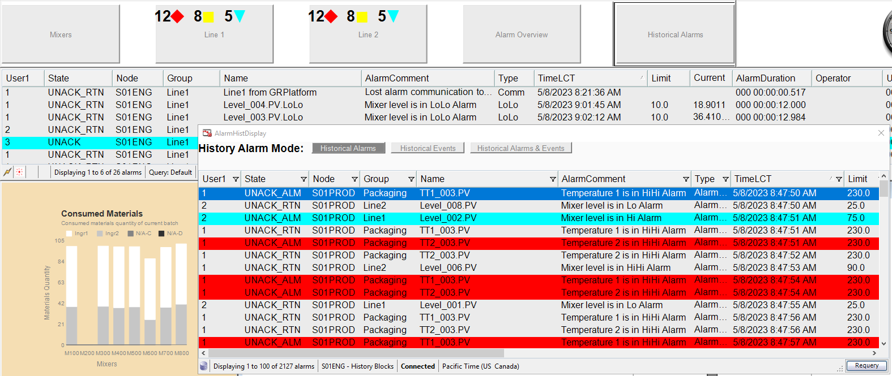
Historical alarms loaded from History Blocks in the AlarmHistDisplay popup at runtime (page 376)
Creating a Runtime Filter
Right-click in the Alarm Client and select Queries and Filters.
In Filters, click Add new filter.
Name it Line1 and construct the filter: Group = 'Line1'.
Click OK, then check the Line1 filter to enable it.
Click OK and verify that only Line1 historical alarms are displayed.
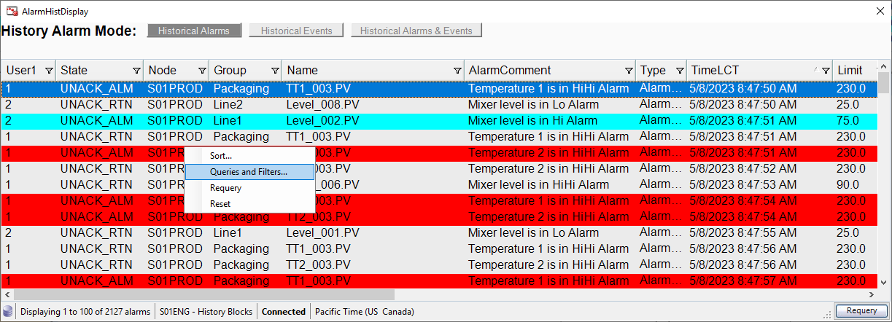
Accessing Queries and Filters from the Alarm Client context menu at runtime (page 377)
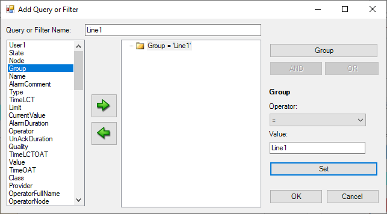
Creating the Line1 filter with the Group = 'Line1' condition (page 378)
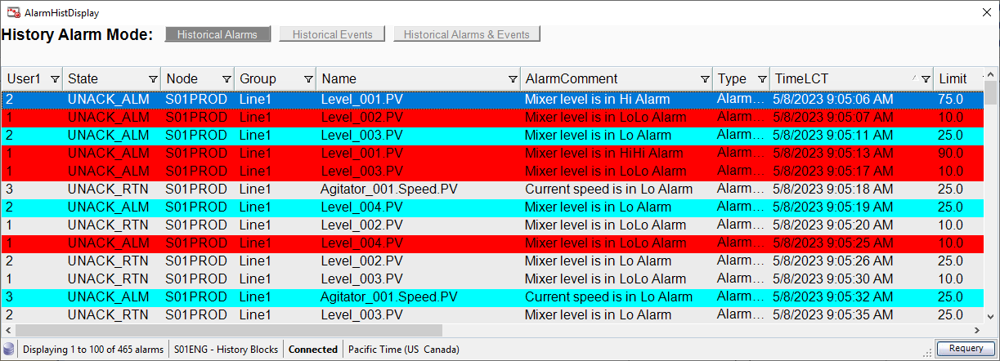
Historical alarms filtered to Line1 only, showing mixer level and agitator speed alarm records (page 379)
Generating and Viewing Events
Close AlarmHistDisplay. In the ContentDisplay window, change the agitator speed setpoint and start/stop the agitator to generate user events.
Navigate back to Historical Alarms, then click the Historical Events button.
The agitator events you generated appear in the grid.
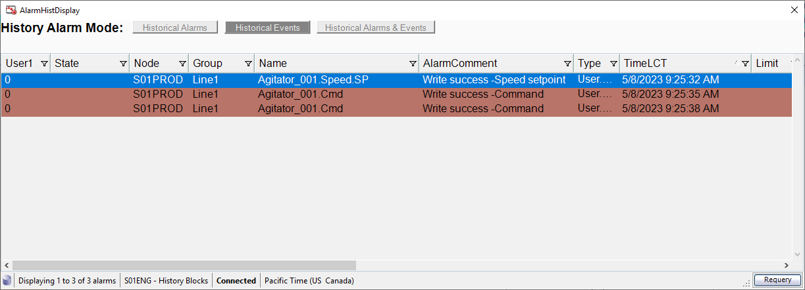
Historical Events mode showing the user-generated agitator events from the Line1 group (page 379)
Click Historical Alarms & Events to see the combined view showing both alarm records and event records.
Switch back to Historical Alarms and close the popup window.
Click Development! to return to WindowMaker.
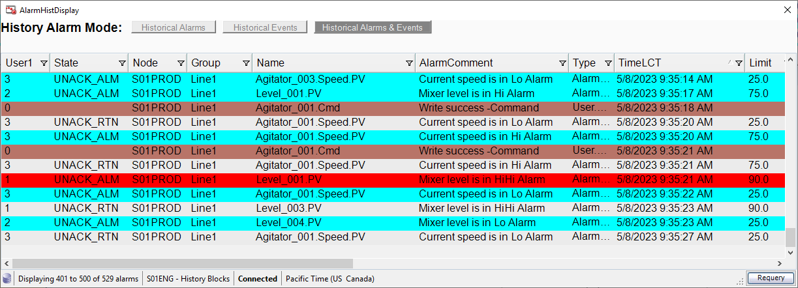
The combined Historical Alarms & Events view showing both alarm records and event records together (page 380)
Key Concept: The three mode buttons (Historical Alarms, Historical Events, Historical Alarms & Events) switch the Alarm Client's ClientMode property between values 3, 4, and 5 respectively. Each mode queries the same History Blocks database but filters the result set to show only the relevant record types.
Knowledge Check
1. What happens when you change the Database Name from WWAlmDb to History Blocks in the Alarm Client configuration?
Click to reveal answer
A Configuration Warning dialog appears, warning that the current configuration (including saved passwords) will be lost. You must click Yes to proceed. In production, record your authentication details before making this change.
2. What ClientMode values correspond to Historical Alarms, Historical Events, and Historical Alarms & Events?
Click to reveal answer
Historical Alarms = 3, Historical Events = 4, Historical Alarms & Events = 5. These values are set via the Pushbutton animation on each mode button.
3. How do the Element Style animations on the mode buttons provide visual feedback to the operator?
Click to reveal answer
Each button's Element Style animation uses a Boolean expression (e.g., AlarmClient.ClientMode == 3). When the expression is True (the button's mode is active), the button displays with Intensity4 style. When False, it uses the unchecked style. This highlights the currently active mode.
4. Why must the Update to Current Time checkbox be enabled when using History Blocks?
Click to reveal answer
When enabled, the Alarm Client automatically adjusts its time range to always show the most recent data relative to the current time. Without this, the display would show a fixed time window that becomes stale as time passes.
5. What is the significance of the WindowModal property being set to false for the Historical Alarms navigation button?
Click to reveal answer
Setting WindowModal to false allows the operator to interact with other parts of the application while the Historical Alarms window is open. If it were true (modal), the operator would have to close the popup before doing anything else.
Module 5 — Alarms and Events Visualization. AVEVA InTouch for System Platform 2023 Training.